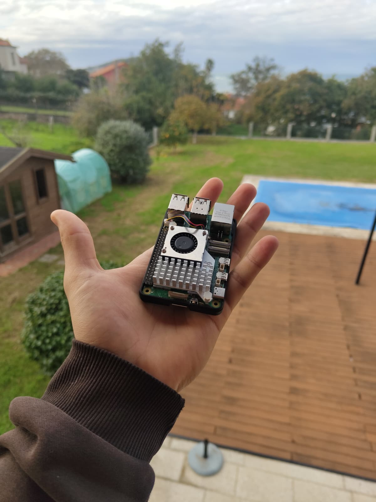

Adquisición PI
Me compré una Raspberry Pi para aprender Python y probar a ejecutar modelos de inteligencia artificial en local. Así fueron los primeros pasos.

Llevaba tiempo dándole vueltas a la idea de tener un pequeño ordenador con el que poder experimentar sin miedo a romper nada, y al final me decidí: me compré una Raspberry Pi. Para quien no la conozca, es un ordenador del tamaño de una tarjeta de crédito, barato y pensado precisamente para aprender y cacharrear. Lo primero fue montarla: la placa, la caja, la tarjeta de memoria con el sistema operativo, la fuente de alimentación... Ver cómo algo tan pequeño arrancaba un escritorio completo en la pantalla fue de esos momentos que te enganchan desde el principio.
Mi objetivo principal era aprender a programar en Python. En la carrera ya había tocado algo de programación, pero quería un proyecto propio en el que aplicar lo que iba aprendiendo. Empecé con lo básico: pequeños scripts para automatizar tareas, leer datos de sensores y encender y apagar LEDs desde el código. Parece una tontería, pero ver cómo una línea de código que has escrito tú hace que algo físico cambie es muy satisfactorio. Cada error en la terminal se convertía en un pequeño reto que me obligaba a investigar, leer documentación y entender de verdad lo que estaba haciendo.
El siguiente paso, y el que más curiosidad me daba, era probar a ejecutar modelos de inteligencia artificial en local, es decir, en mi propia Raspberry y sin depender de ningún servicio en internet. Con modelos pequeños y bastante paciencia, conseguí que respondiera a preguntas sencillas directamente desde la placa. No es rápido, y está claro que no compite con un ordenador potente, pero entender cómo funciona por dentro, qué recursos consume y por qué tarda lo que tarda me ha enseñado muchísimo. Este es solo el principio: ya tengo en mente varios proyectos para seguir exprimiéndola y los iré contando por aquí.